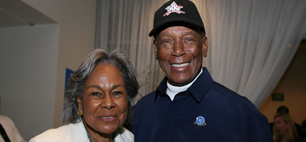

Rest in Peace, Ernie Banks
News on January 29, 2015
It is with tremendous sadness that we acknowledge the death of our dear friend Ernie Banks and express our sincerest condolences to his family as they endure this incredible loss.
As the Chicago Cubs’ first Black player, six years after Jackie Robinson broke the major league color barrier by joining the Brooklyn Dodgers, Ernie’s contributions to our nation’s history are worthy of great applause. His prowess and courage helped pave the way for more opportunities in baseball and throughout society.
As a longstanding supporter of the Jackie Robinson Foundation, Ernie adds to his legacy a dedication to helping thousands of students of color achieve a first class college education.
While the world will remember Ernie Banks, the baseball Hall of Famer, for his incredible athletic acumen, we also will treasure memories of his expansive, fun-loving personality, his infectious positive energy and his great compassion.
As recently as 2013, in a CNN interview, Ernie referred to his cherished, personal relationship with Jackie Robinson, professing that “Jackie felt bigger than life” to him. Ernie described Jackie as “a father, an uncle and a friend” all at once, recalling wistfully the time they spent together, including a trip to Japan with a group that included both Rachel and Jackie Robinson. Ernie said more than once that he “studied” everything about Jackie up until Jackie’s death in 1972 in an effort to learn from Jackie’s example.
We hope that the next generation in turn will study how Ernie led his life - his character, his grace, his sense of discipline, and his warm embrace of all who were fortunate enough to be in his presence.
Today we salute a baseball legend, a gentleman, and a member of our JRF Family.
Ernie, may you rest in peace...